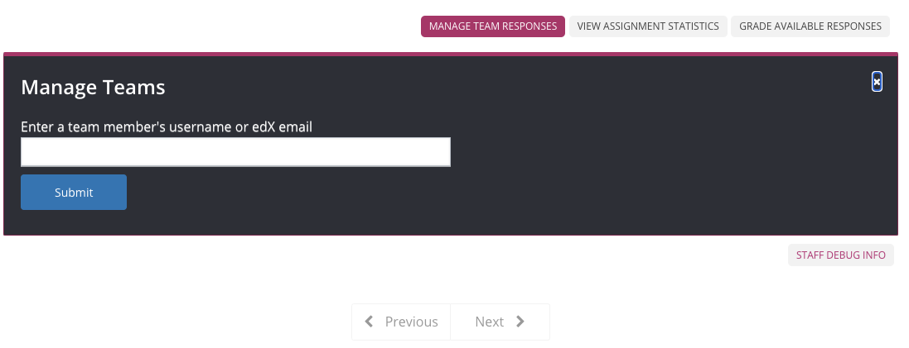
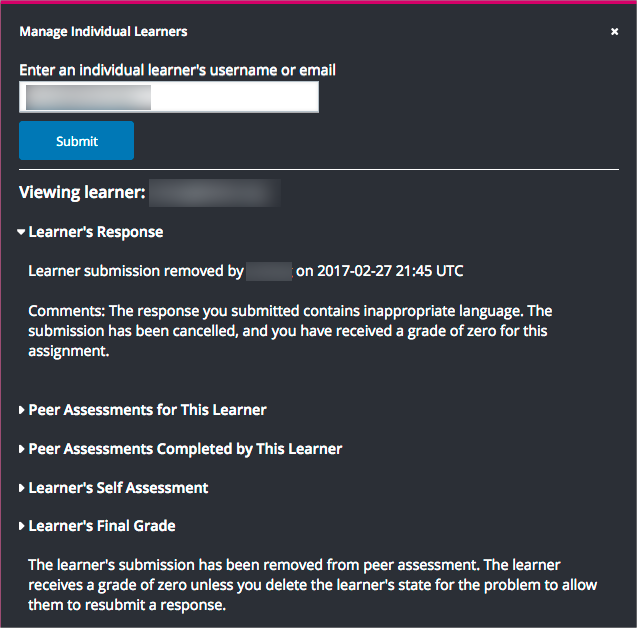

11.22.3. Managing Open Response Assessment Assignments#
After you publish an open response assessment (ORA) assignment and learners start to submit responses and perform assessments, members of the course team can take the following actions.
The following topics provide additional information about open response assessments.
11.22.3.1. View a Specific Learner’s Response and Assessments#
You can view the following information about an individual learner’s open response assessment assignment.
The text of the learner’s response, including any files that the learner uploaded.
The peer assessments that other learners performed on the learner’s response, including feedback on individual criteria and on the overall response.
The peer assessments that the learner performed on other learners’ responses, including feedback on individual criteria and on the overall responses.
The learner’s self assessment.
The learner’s grade for the assignment.
An override grade provided by course staff.
For more details about accessing information for a specific learner, and for an example that shows a learner’s response with peer assessments, see Access a Specific Learner’s Information.
To determine whether a learner has received the required number of assessments from other learners and has completed the required number of assessments for other learners, refer to the Graded By and Must Grade values that were set for the open response assessment assignment in Studio. For more information about these settings, see Specify Step Settings.
11.22.3.1.1. Access a Specific Learner’s Information#
In order to access information about a specific learner’s assignment, you need that learner’s username or email address. For more information, see Download or View Learner Data.
To access information about a specific learner, follow these steps.
View the live version of your course in the LMS, and then go to the ORA assignment.
Scroll to the end of the problem, and then select Manage Individual Learners.
Enter the learner’s username or email address, and then select Submit.
The Manage Individual Learners dialog box updates with expandable sections for each of the assessment steps in the assignment and other actions you can take on the learner’s response. Only the types of assessment steps (self, peer, or staff) that are included in the assignment are shown.
If the learner uploaded files along with her response, select View the files associated with this submission to review or download the files.
Select any of the section headings to expand that section.

11.22.3.2. Perform Staff Assessments in an ORA Assignment#
Note
The staff grading experience has gotten a makeover! Learn about the new ORA staff grading experience.
When a staff assessment is included in an open response assessment assignment, course team members see a Grade Available Responses option at the end of the assignment in the course, and learners see a Staff Assessment step in their assignment. For information about the possible assessment steps in an ORA assignment, see Assessment Steps.
Submitting a staff assessment has the following results.
The score that you give a learner in a staff assessment overrides scores from any other assessment type in the assignment.
Peer assessments that are completed before or after your staff assessment have no effect on the learner’s final assignment grade.
To perform a staff assessment in an assignment, follow these steps.
View the live version of your course in the LMS, and then go to the ORA assignment.
Scroll to the end of the problem, and then select Grade Available Responses.
In the dialog that opens, the number of available and checked out responses is shown. Checked out responses are responses that are currently being graded by you or another course team member.
Select the Staff Assessment heading to open a response that is available for grading.
Perform an evaluation of the response using the problem’s rubric.
Select Submit assessment to submit the assessment and close the grading dialog. Alternatively, select Submit assessment and continue grading to submit the assessment and immediately grade another submission.
11.22.3.3. Performing Staff Assessments in a Team ORA Assignment#
Note
The staff grading experience has gotten a makeover! Learn about the new ORA staff grading experience.
Team-based open response assessments can only be assessed by staff. Learners will see this as a Staff Assessment step in their assignment. Course team members will see a Grade Available Responses option at the end of the assignment.
Note
Staff assessments for Team ORAs follow the same process as for individual ORAs except that the same score will be applied to all members of the submitting team.
To perform a staff assessment in a team assignment, follow the steps outlined in Perform a Staff Assessment. Before submitting, you will receive an alert to notify you that the grade will apply to all members of the team. Click Ok to apply the grade and close the grading dialog.
11.22.3.4. Override a Learner’s Assessment Grade#
For any open response assessment, whether or not a staff assessment is already included, you can override a learner’s final grade for the assignment. The ability to override the final grade can be useful if, for example, a learner’s submission was inappropriately or inadequately graded by peers, or if there are not enough peer reviewers to complete the required number of peer assessments.
Submitting an override assessment has the following results.
The score that you give a learner in an override assessment overrides scores from any other assessment type in the assignment.
Any steps that the learner did not complete for the assignment are marked as complete.
Peer assessments that are completed before or after your staff assessment have no effect on the learner’s final assignment grade.
Note
You can perform override assessments more than once on the same response, regardless of the due date of the assignment. The learner’s final grade on the assessment is updated to reflect the most recent staff override assessment grade.
Once grades are frozen 30 days after the course end date, you will no longer be able to perform override assessments for learners.
Learners who receive override grades for their submissions see a Staff Assessment step in their assignments, where they can view the rubric and any comments provided in the staff assessments.
11.22.3.4.1. Perform an Override Assessment#
In order to perform an override assessment for a learner, you need that learner’s username or email address. For more information, see Download or View Learner Data.
To perform an override assessment, follow these steps.
View the live version of your course in the LMS, and then go to the ORA assignment.
Scroll to the end of the problem, then select Manage Individual Learners.
Enter the learner’s username or email, then select Submit.
The Manage Individual Learners dialog updates with expandable sections for each of the assessment steps in the assignment and other actions you can take on the learner’s response.
Select Submit Assessment Grade Override.
Perform an assessment of the learner’s response using the problem’s rubric.
When you have finished the assessment, select Submit assessment.
The grade that you have given this learner’s response becomes the learner’s final grade on the assignment. Peer assessments are not taken into account in calculating the learner’s final assignment grade when a staff override grade exists.
Learners who have an override grade for their submission see a Staff Assessment step in their assignment, where they can view the rubric and any comments provided in the staff assessment.
Note
Override assessments can be performed more than once on the same response, regardless of the due date of the assignment. The learner’s final grade on the assessment is updated to reflect the most recent staff override assessment grade.
11.22.3.5. Overriding a Team’s Assessment Grade#
As with individual ORAs, you can override the final grade for a Team ORA if it has previously been graded. Although only staff may grade team assignments, this ability to override a grade can be useful for fixing improperly submitted grades or amending grades after-the-fact. For individual ORAs, see Override a Learner’s Assessment Grade.
Note
Like individual ORAs, overrides can be performed more than once on the same Team Open Response Assessment.
In order to perform an override assessment for a team, you need the edX username or edX email address of a learner on the team. For more information, see Download or View Learner Data.
To perform an override assessment, follow these steps:
View the live version of your course in the LMS and navigate to the Team ORA.
Scroll to the end of the problem where staff have a Manage Team Responses option. Select this to open the Manage Teams panel.
Enter the edX username or edX email of any member of the team and select Submit.
The Manage Teams dialog updates with the team’s response, grade, and existing assessments, along with options to submit overrides and remove the submission from grading.
Select Submit Team Grade Override.
Perform an assessment of the team’s response using the problem’s rubric.
When you have finished the assessment, select Submit assessment.
The grade given for the team’s response overrides the grade for each member of the team for this assignment.
{kind=link}
Note
Like individual ORAs, overrides can be performed more than once on the same Team Open Response Assessment up until grades freeze for the course (30 days after the course end date).
11.22.3.6. Remove a Learner’s Response#
In a course that contains assignments with peer assessment steps, learners might alert you to inappropriate responses that they have seen while performing peer assessments. In such a situation you can locate and remove the response. Doing so removes the response so that it is no longer shown to other learners for peer assessment.
Note
Removing a learner’s response is an irreversible action.
When you remove a response, the response is immediately taken out of the pool of submissions available for peer assessment. If the inappropriate response has already been sent to other learners for peer assessment, it is also removed from their queues. However, if any learner has already graded the inappropriate response, it is counted as one of the submissions they have graded.
Note
After you remove an inappropriate response, you can decide whether the learner who submitted that response is allowed to submit a replacement response.
If you do not want to allow the learner to submit a replacement response, you do not need to take any additional action. The learner receives a grade of zero for the entire submission.
To allow the learner to resubmit a response for a cancelled submission, you must delete the learner’s state for the problem.
To remove a submitted response, follow these steps.
Identify the learner who submitted the inappropriate response by following the steps in the Locate a Specific Submission in an ORA Assignment topic.
View the live version of your course in the LMS, and then go to the ORA assignment that contains the submission you want to remove.
Scroll to the end of the problem, and then select Manage Individual Learners.
Enter the learner’s username or email, and then select Submit.
The Manage Individual Learners dialog updates with expandable sections for each of the assessment steps in the assignment and other actions you can take on the learner’s response.
Select Remove Submission from Peer Grading.
Enter a comment to explain the removal. The learner sees this comment when she views her response in the open response assessment problem.

Select Remove submission.
The inappropriate submission is permanently removed from peer assessment. Removed submissions are also removed from the list of Top Responses if they were previously listed.
Optionally, delete the learner’s state for the problem. This step allows the learner to submit another response. For more information, see Delete a Learner’s State for a Problem.
When you access this learner’s information again by selecting Manage Individual Learners, instead of the response, you see a note showing the date and time that the submission was removed, and the comments that you entered.
{kind=link}
When the learner views the assignment in the course, she sees that all steps in the assignment have a status of “Cancelled”. Under Your Response, instead of the text of their response, she sees the date and time that their response was cancelled, and the comments relating to the removal of their submission.

11.22.3.7. Remove a Team’s Response#
Removing a team’s response is very similar to removing a single learner’s response. To remove a submitted Team ORA response, follow these steps.
Identify a learner on the team that needs their submission removed from the staff grading workflow. If you only know the team name, use the Teams browser to find learners on a specific team. You can pick the username of any learner on the team by hovering over the learner avatar icons in the Team Details panel.
View the live version of your course in the LMS, and then go to the ORA assignment that contains the submission you want to remove.
Scroll to the end of the problem, and then select Manage Team Responses.
Enter the learner’s username or email, and then select Submit.
The Manage Teams dialog updates with expandable sections for each of the assessment steps in the assignment and other actions you can take on the team’s response.
Select Remove Team Submission from Grading.
Enter a comment to explain the removal. The learners see this comment when they view their response in the open response assessment problem.

Select Remove submission. The selected submission is permanently removed from staff assessment.
Optionally, delete the team’s state for the problem. This allows the team to submit another response. For more information, see Delete a Learner’s State for a Problem. If you follow the instructions on that page and enter the username of a student on a team, the team state will be cleared.
When you access this learner’s information again by selecting Manage Team Responses, instead of the response, you see a note showing the date and time that the submission was removed, and the comments that you entered.

When a learner on the team views the assignment in the course, they will see that all steps in the assignment have a status of “Cancelled”. Under Your Response, instead of the text of their response, they will see the date and time that their response was cancelled, and the comments relating to the removal of their submission.

11.22.3.8. Locate a Specific Submission in an ORA Assignment#
If you are alerted to an inappropriate ORA submission that you want to cancel and remove from peer assessment, locate the specific submission by following these steps.
Ask the person who reported the incident to send you a sample of text from the inappropriate response.
Search the report for text that matches the sample text from the inappropriate response.
From any matching entries in the spreadsheet, locate the username of the learner who posted the submission.
Make a note of the username, and follow the steps to remove a learner response from peer grading.